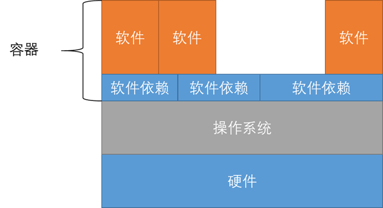

容器是什么?¶
软件容器用于将软件组件和相应的依赖环境封装到一个文件中。 容器使我们避免从头开始安装软件以及所有依赖，做到**下载即可用**，使得使用复杂的linux软件像使用APP一样简单。
- 容器封装了软件组件，以及软件运行所必须的最少依赖环境。
- 容器易于封装，体积小，具有跨平台的优势。
我们通过快速安装docker:
$ docker pull biocontainers/dia-umpire:v1.4256_cv2
注： 这个简单的命令将安装dia-umpire及其所有依赖项
容器是在操作系统基础上构建的。 与虚拟机不同，容器本身不包含操作系统，而是使用优化的系统库构建软件及其依赖，并使用主机的操作系统调用内存等硬件实现软件运行的目的。 容器通常是一个特定软件的包，通过将一个容器实例化来运行里边的程序，我们可以多次实例化同一个容器并使它们独立（互不干扰）运行。
容器的技术原理如下图所示：

为什么要使用容器？¶
大多数情况下，执行生物信息学分析时，应安装和配置几种生物信息学工具和软件。 此过程可能需要几个小时，并且需要很多工作，包括安装多个依赖项和工具。 BioContainers提供了易于使用的软件包和工具，可以轻松地在本地计算机，HPC和云体系结构上进行部署和使用。
linux
1 2 3 4 5 | |